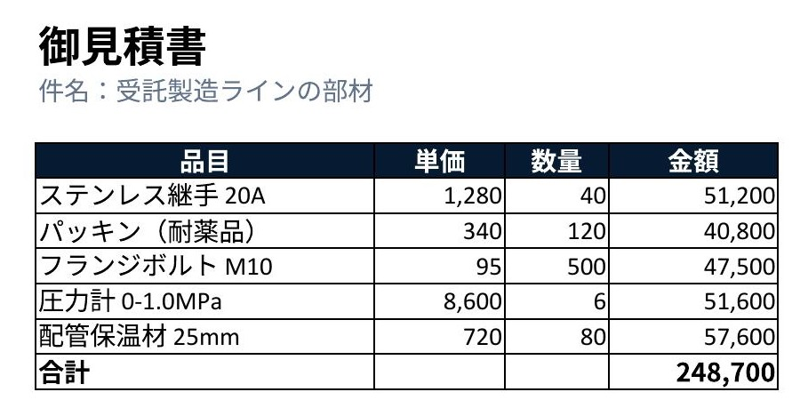

PLAIN-TEXT BASIC, RUN AGAINST DOCUMENTS THAT CANNOT STORE MACROS
Microsoft Office は要りません。文書の形式はそのままに、 中身だけを機械で処理します。ソースは平文なので差分が読めます。

「この Excel を処理する VBA を書いてほしい」という依頼は、
渡されたファイルが .xlsx だと素直には成立しません。
.xlsx は仕様としてマクロを格納できないからです（マクロは .xlsm 側）。
.xlsm に変換する。相手の運用を変えることになり、受け入れられないことがある。
計算結果だけ埋める。再実行できず、式も残らない。次に数字が変われば作り直し。
手作業に戻す。台数や枚数に比例して時間が増える。
格納できないだけで、実行できないわけではありません。
ソースを実行時に Basic ライブラリへ流し込めば、文書は普通の .xlsx のまま処理できます。
# ソースは平文のまま。文書には一切埋め込まない python basrun.py apply book.xlsx src MyLib Amount.FillAmounts --backup # 文書に埋まってしまったマクロを、平文へ救出することもできる python basrun.py pull rescued Standard --book legacy.ods
回り道した先のほうが、本来の形として優れています。
| 埋め込みマクロ | basrun | |
|---|---|---|
| ソースの可読性 | 文書内の XML に埋まる | git diff が読める |
| レビュー | 実質できない | 通常のコードレビュー |
| 対象の形式 | マクロを持てる形式のみ | .xlsx .pptx .docx 共通 |
| 真実の在処 | 文書 | ソース（ライブラリは実行時のキャッシュ） |
別の .xlsx ― 粗利率と % 書式は basrun が入れ、グラフと条件付き書式は生成時に。Excel は使っていない
文字列が正しいことと、読める状態であることは別です。 「うまくいきました」と表示するコードは、うまくいかなくてもそう表示します。 だから出来上がりを描画し、目で確かめてから完了とします。

.docx ― 版数の差し替えとロット件数の追記を basrun が実行

.xlsx ― 3-D グラフとテクスチャ。描画しなければ確認できない領域
文字列としては完全に正しい。読み返しでは絶対に出ない欠陥。
デザインシステムの色を名前で対応させ、載せる面の役割を落としていた。
横幅で設計して縦の寸法を使っていなかった。数値上は正しい配置。
確かめた範囲と、確かめていない範囲を分けて書きます。 聞かれてから答えるのと、先に書いておくのとでは意味が違うためです。
vbaProject.bin を含まない、通常の .xlsx であること